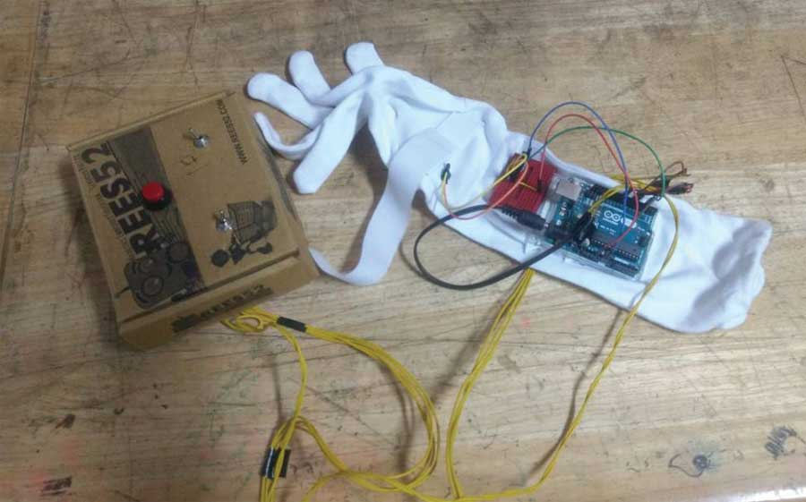

Guiding system for visually impaired in public transportation
A collaborative project IAD, TU Darmstadt and IDC, IIT Bombay
Students Exchange program between Industrial Design Centre (IDC), Indian Institute of Technology Bombay, India and IAD, Technische Universität Darmstadt, Germany. This program is an attempt to promote cross cultural problem solving among participating departments of institutes of India and Germany. This project is an attempt to help the visually impaired people access public transportation with less difficulty and navigate to places of their requirement more efficiently.
Wearable
A wearable with 5 types of vibration feedback was prototyped for micronavigation

Ideation - Wearable

Paul has a device on his hand that interacts with the beacon at the bus stand and directs him to the desired platform. Once at the platform, the device interacts with the correct bus and directs him to the door
The participants felt the wearable was comfortable and unobstrusive while giving them feedback for navigating. The vibration patterns generated were recognisable since there was enough contast.